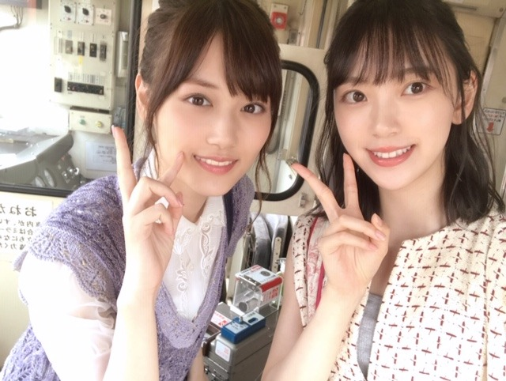

2019/0818Sun梅干し確保
やほう
くしゃみと鼻水がとまらない〜！
そして喉もやられています
何か花粉飛んでるかな？？？
まさか、秋花粉？？
アレルギー体質すぎて何に反応してるか分からず...

路面電車の街 のmv撮影は鈍行列車に揺られてずっと眠かったです。笑
完成したmvを見たら、なんだかほろっと泣ける話になっていました
ぜひ！
そういえばモバメでウィッグを被って金髪にしました〜って騒がせちゃいました。笑
へへへ〜
ごめんね、
染めてないよ〜☺︎
でもいつか役とかで染めれたらいいな
ベリーショートにもしてみたい！！
夏があっという間に終わっちゃうね☺︎
この間、日奈子とみり愛と絢音と蘭世と遊んだの！
次のブログに書きます。
めーちゃ楽しかったよ。ずっとふざけてる。笑
大好き❤︎
NHKサッカーのCMのとき。
いつかサッカーの試合生で見たいなぁ
実はスポーツ観戦好き☺︎
水泳、バレーボールも興味あります☺︎
ではでは
あ、また美味しそうな梅干し買いました！
塩分17%と15%のやつ！たのしみたのしみ
2019/08/18 14:42


コメント(364)
全ツ大阪お疲れ様でした！福島から僕も参戦しました！
スタンド上段からでしたが、未央奈ちゃんのライブパフォーマンス見れて良かったです！未央奈ちゃんのサイリウムカラー振りました٩(^‿^)۶ 見えましたかね？
台風の影響で2日目中止になったのは残念でしたが、ものすごく最高のライブを見ることが出来ました！
来年は仙台とかにも来て欲しいです笑
最高の夏でした！ありがとう(^O^)
見てもらった方がいいよ。
アナフィラキシー ショックとかあったら
大変だし。
健康第一。
未央奈さんに見てもらえるなら頑張ります！
梅干しも僕好きです
未央奈さんと食べたいですね、
未央奈さんに見てもらえるなら頑張ります！
梅干しも僕好きです
未央奈さんと食べたいですね、
今日も1日おつかれさま
オレも鼻と喉やられてます
エアコンのせいみたいです
でもエアコン付けないと暑さにやられるし
どうしたらいいんだろうね？
未央奈もエアコンのせいかもよ
あのmvそんな眠い状態で撮ってたんかい！
良きmvに仕上がって良かったね 笑
次のブログ楽しみにしてまーす(^-^)
では、明日も1日楽しもうd(@^∇ﾟ)/ﾌｧｲﾄｯ♪
o(ﾟ▽＾)ﾉｼまたねぃ♪
アレルギー体質なんですね。
ちょっと大変そうですね。
でもじょうずにつきあっていってくださいね！
金髪もベリーショートも似合いますよね！！！
だって元がいいからね！！！
これからも未央奈ちゃんらしく
頑張ってくださいね！！！
応援しています！！！
(o^^o)
‥‥冬も食べますが。
南高梅か
未央奈ちゃんはどんどんキレイで素敵になってくね。
まだまだ暑い日が続くから、梅干し食べて乗り切ろー。
でも、いつか見てみたいな。金髪役できるといいですね！
では、、
goodluck
学術的根拠はないのですが
アレルギー症状がある人は
台風の前後、数日間は敏感に
反応するらしいです
鈍行列車って音といい
揺れ具合といい
心地よいですよね(^_^)
え～！！
未央奈さんの金髪
どんな感じだったんだろ～
ブログの写真
セレブ感たっぷり！
サッカー観戦は埼玉スタジアムで
浦和レッズ戦がオススメです(^_^)/
梅干し愛が半端ないですね
チョコレートのカカオ配合並みに
こだわりがあるみたい(^_^)
次のブログ楽しみにしてます！
確かに秋花粉が始まっているのかもしれませんね。
風邪じゃないといいですね。
お隣のそろりそろりさんさ～
減量されたのか魅力が増してましたね。
え？もうひとりの御方ですか？
あ、う～～ん。えっと～～
十二分に魅･･･ﾓﾌﾝﾓﾌﾝ。
まだまだ暑い日が続きますね。
スポーツ観戦も野外だと大変だね。
ウィッグはもはや帽子？(笑)
梅干しって塩分数値あるの！！！
今度見てみよう～
見るだけ。
今の時期だと、アレルギーより冷房のせいかもしれませんね。私は暑いのが苦手ですが、冷房があれば何とかなっていたのですが、今年は冷房で頭痛します。
お盆が過ぎて、夏の終わり、ひぐらしのなく頃になりました。子供の頃は夏の終わりは寂しい感じがしましたが、暑いのが苦手になってからは、秋が待ち遠しいです。私的には食欲の秋、芸術の秋、スポーツの秋です。
スポーツと言えば私はサッカーファンです。サッカーの試合はいくつか見に行ったことがあります。やっぱり生はスピード感が全然違います。
ではまた。
今晩は!堀ちゃんブログ更新ありがとうございます!
今日も暑かったですけれども、お身体は大丈夫でしょうか？
この先暫くは暑い日が続きますんで、体調管理をしっかり徹底して頂きたいと思いますね!
それでは9月の握手会でお会いしましょう!
お休みなさい!
今日もお疲れ様です
鼻と喉がやられてるという事で、気をつけて下さい
喉もやられているなら、花粉より風邪な気もしますけど、大事にして下さい（暑いけど冷たい物は控えましょう）
路面電車の街はみおなが本当に寝てしまったとサイトの説明にあったから、相当眠かったんだね笑
俺も学生の頃、電車で寝過ごして、すごい遠くまで行ってしまった事があります（起きたら見慣れない景色と駅名でパニック笑）
発売されたら、買いますね
今日は甲子園観てて岐阜県が、逆転満塁ホームランで、準決勝進出したので、みおなも岐阜を応援してね
今年は、岐阜県が強くて初の4強だから長野県民だけど今年は岐阜を応援します
今日でお盆休みも終わりで明日から仕事だけど、31日にライブに行くから休み明けも頑張れそうです！
みおなも頑張ってね！
あなたの番ですと乃木中を観て、明日から頑張ります
ありがとうございました
アレルギー症状がある人は
台風の前後、数日間は敏感に
反応するらしいです
鈍行列車って音といい
揺れ具合といい
心地よいですよね(^_^)
え～！！
未央奈さんの金髪
どんな感じだったんだろ～
ブログの写真
セレブ感たっぷり！
サッカー観戦大好きです
梅干し愛が半端ないですね
チョコレートのカカオ配合並みに
こだわりがあるみたい(^_^)
ブログ楽しみにしてます！
美月とのツーショット可愛い〜♡
モバメの金髪もめっちゃ可愛かったよ！
番組でギャルやってた企画を
思い出した(⁎˃ᴗ˂⁎)懐かしい〜
またブログ楽しみにしてるね⸜(๑'ᵕ'๑)⸝*
MV見ました！切なかったけど未央奈が顔をプニってしたとこはにやけました。お仕事頑張ってください！
ブログ更新ありがとうございます。
大丈夫かな？ 喉をいためるのは困りますね。全握・ミニライブ、神宮を控えていますので、無理はしないでくださいね。
「路面電車の街」のMV、高瀬さんの何ともいえない存在感がありましたね。「路面電車」といいながら、あれはローカル電車、MVの怖さより、歌そのものの方は気に入っています。
ところで、「金髪」騒動、かなりの論議でしたね。その反響ぶりに驚くとともに、「ごめんね」という未央奈の言葉に安心しました。私は未央奈の「緑の黒髪」（まさか「じょしらく」の時の髪を連想したのでは？）が好き。
そういえば、ドキュメンタリー映画の第一弾、「髪を切るか、乃木坂をやめるか」という選択肢、思い出しました。
仲良し２期生とのやりとり、次回のブログも楽しみにしたいと思います。
路面電車の街のMVよかった( ´ω` )/
感動できるいいMVだった\(๑´ω`๑)/
みんないい色を出してたなー！！あと金髪ウィッグはびっくりしたなー笑
似合ってたけど俺はやっぱり、みおちゃんは黒とかの色が好きかなー٩( 'ω' )و
梅干し大事だね＼(^o^)／塩分補給しっかりしましょう´ω`)ﾉ
福岡のトゥモロー⊿
堀ちゃん、もしかして夏風邪引いたのかな？
外と室内の温度差が激しいから、体調崩しやすいかもしれないね。
ちなみにうちは、今年の夏も扇風機
自宅のエアコンはまったく使っていないから、ぜんぜん掃除もしておらず、稼働させたらそれこそ花粉を吐き出すのでね
そういえば、今日スーパーに行ったら、暑さのせいか野菜がめっちゃ高騰していた。
アレルギーは厄介ですよね
ツーショットとってもいいね
梅干しはおいしいよね
お仕事も忙しいかと思いますが、未央奈ちゃんらしく、楽しい事やこれから楽しみたい事のイメージができられている様で、ブログを読んでいて嬉しく思いました
先日乃木坂工事中にて、未央奈ちゃんが伊藤理々杏ちゃんにアクションを教えていた部分が印象に残っています。
右・左・アッパー
未央奈ちゃんにパンチされたら痛そうだな、と思ってしまいました(笑)パワーというより、パンチのコツを未央奈ちゃんは知っている様な気がして…(笑)
明日からもお仕事頑張って下さい。
それではまた
楽しいよ！ 2期生同士本当仲が良いね！
大好きですよ。今日もお疲れ様でした！550972
楽しいよ！ 2期生同士本当仲が良いね！
大好きですよ。今日もお疲れ様でした！550972
僕もなぜかこのところ鼻水がが止まりません。夏風邪というわけでもないようなので軽い暑気当りですかね。まずは堀さん、お大事に。
MV『路面電車の街』は一つの短編映画を観ているような出来栄えでとてもすてき。みんなで同じ電車の車両に乗り合わせるシーンが好き。
夏は水分とともに塩分も汗で奪われるので、上質な美味しい梅干しは体にもごほうび。食べ過ぎないで味わって召し上がれ。
ではまたコメントします。おやすみなさい。
さらばだ、また会おう！（気球に乗って去りぬ〜）
暑さにも負けないように体調管理はしっかりとね！
白似合うね～＾＾
早くよくなるの祈ってます。
モバメの金髪も似合ってたので、金髪ショートでの役も見てみたいよー。
みおなちゃん、くしゃみ・鼻水は大丈夫！？みおなちゃんはアレルギー体質なんだ。俺はアレルギーは一通り大丈夫みたいだよ。アレルギーとかは治らないから、そこがキツイよね・・・。
みおなちゃん、金髪のウィッグを被ったんだ。なんか「みおなちゃんが金髪！？」と思うと、ちょっと驚いちゃうね。なんかみおなちゃんは優しいし清楚な印象があるから(^^)
ＮＨＫのサッカーのＣＭは俺も見たよ。「おっ、みおなちゃんだ！」って思ったよ。あとみおなちゃんはサッカーをやった事があるの？なんか異様に蹴り方が上手かったけど(^^)
観戦はオリンピックのサッカー・水泳・バレーボールとかが観れればいいね。（みおなちゃんにそんな暇は無いか笑）
じゃあ。
梅干し、17％とはなかなかの猛者ですねー。
そのままで食べるのかな？
ちなみに私の食べてる梅干しの塩分は22%。
梅干しと塩を一緒に食べてる感じで、
梅の様々な効用と塩分の取り過ぎとを、
常に天秤にかけながら。
さすがに水か麦茶がないと、
後味がいつまでも塩です。
そしてモバメの件。
私の使う検索大手のフリーメールアプリ、
関連メールを勝手にまとめる悪いクセがあって、
しかも最新から見せてくれるウッカリさん。
3通目から見てしまいました…。
えぇ、こまめにメール見ない私が悪いんです(´༎ຶོρ༎ຶོ`)
金髪ほんとに騙された笑笑
そっか！遊んだんか！うちも、この前、友達と遊んだ！天気の子見てきたよ！めっちゃ感動した！ホットギミックの映画と同じぐらい好き！
未央奈、梅干し好きなん？うち、はちみつ入りのならめっちゃ好き！これからも応援しょうるね！
この夏は、乗り切れる！
コメントする